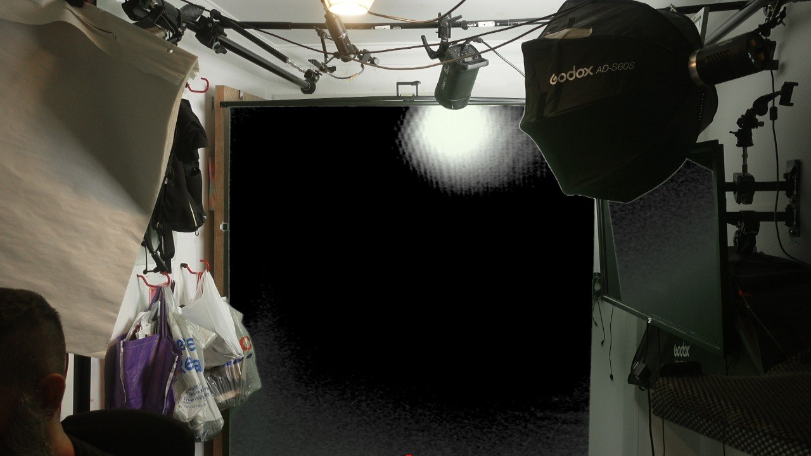

Let's look at the common issue of hot spots and uneven lighting on a green screen, which ruins the chroma key. 📸

In the image above, you can see a massive, intense white reflection (hot spot) on the green screen from a direct light source. 🔆 When the light is too close or not diffused enough, the camera sees white instead of green. Your OBS Chroma Key filter expects green, so the pure white area won't key out correctly! ❌
To resolve this issue and get a perfect key, follow these steps: